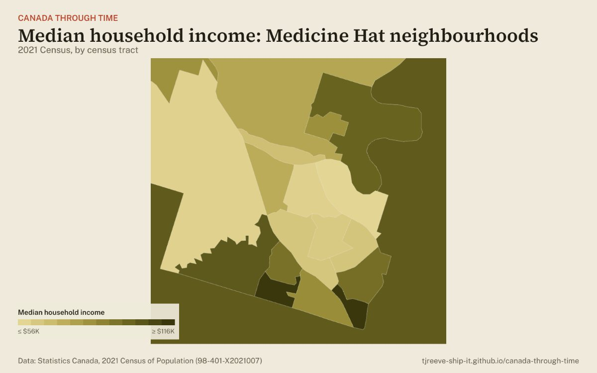

Medicine Hat neighbourhoods

Explore Medicine Hat’s neighbourhoods →Medicine Hat (Alberta) is one of the 50 Canadian cities that Statistics Canada divides into census tracts, small neighbourhoods of about 2,500 to 8,000 people. It has 20 of them. The interactive map colours every tract by income, rent, age, where people were born, language and more, and compares Medicine Hat with the other 49 cities.
- 76,376people in 2021
- $80,000median household income (2020), 31st of 50 cities
- 27.3%of households rent their home
- 19.2%of households spend 30% or more of income on shelter
- 9.7%of residents are immigrants
- 42.0median age
- 8.1%belong to a visible minority group
- 8.6%have a mother tongue other than English or French
Income across Medicine Hat’s neighbourhoods
Median household income ranges from $55,600 in the lowest tract to $123,000 in the highest, with half of tracts above $79,250. 0 tracts have no published income figure (Statistics Canada suppresses small or low-response areas).
Where people were born
9.7% of Medicine Hat’s residents are immigrants, and 2.0% arrived between 2016 and 2021. The most common places of birth among them:
| Place of birth | Share of residents |
|---|---|
| United Kingdom | 1.8% |
| Philippines | 1.3% |
| India | 0.6% |
| Mexico | 0.6% |
| United States of America | 0.6% |
On the interactive map you can pick any of 47 countries and see which neighbourhoods their immigrants live in.
Source: Statistics Canada, 2021 Census of Population, Census Profile (98-401-X2021007). 2020 incomes include pandemic benefits. Shares of residents are of people in private households. Counts are randomly rounded by Statistics Canada.